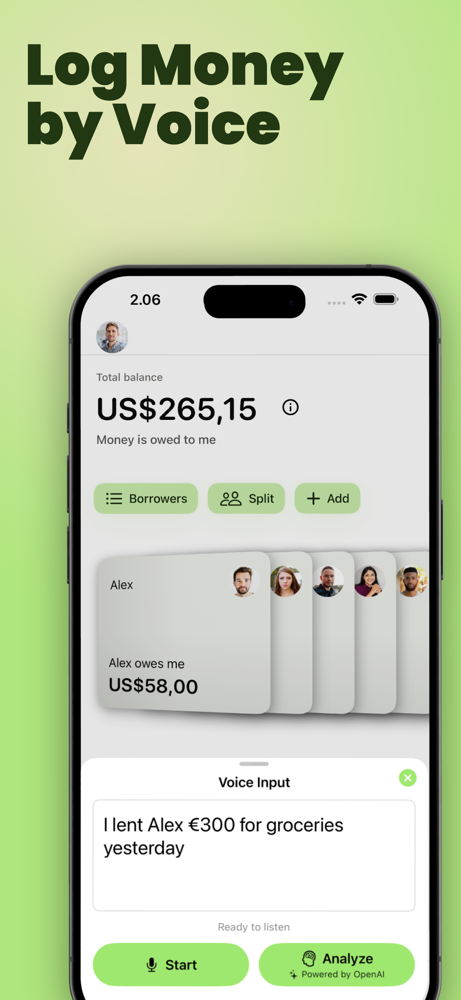
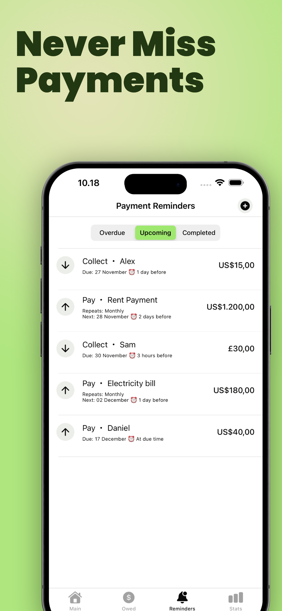
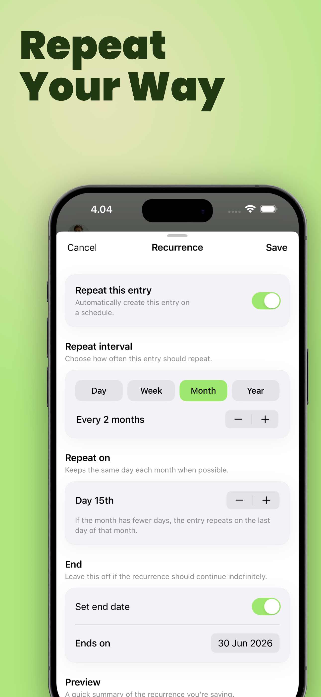
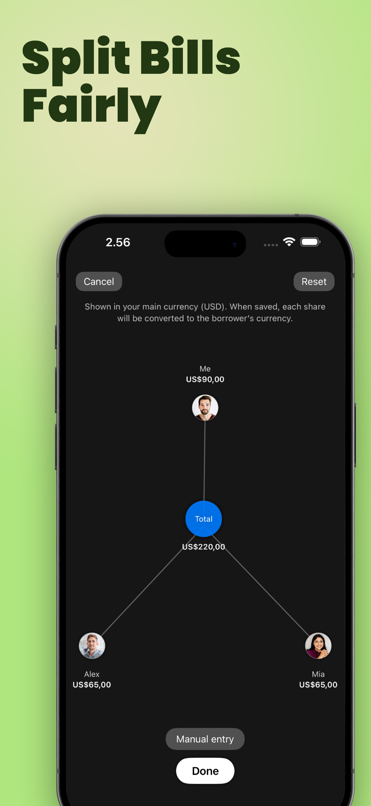
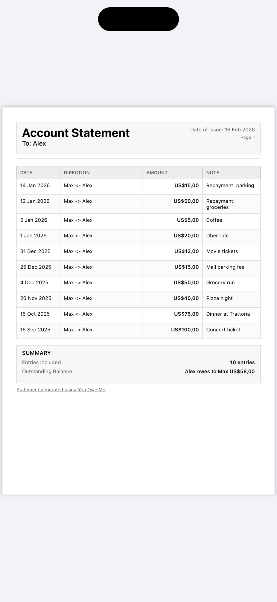
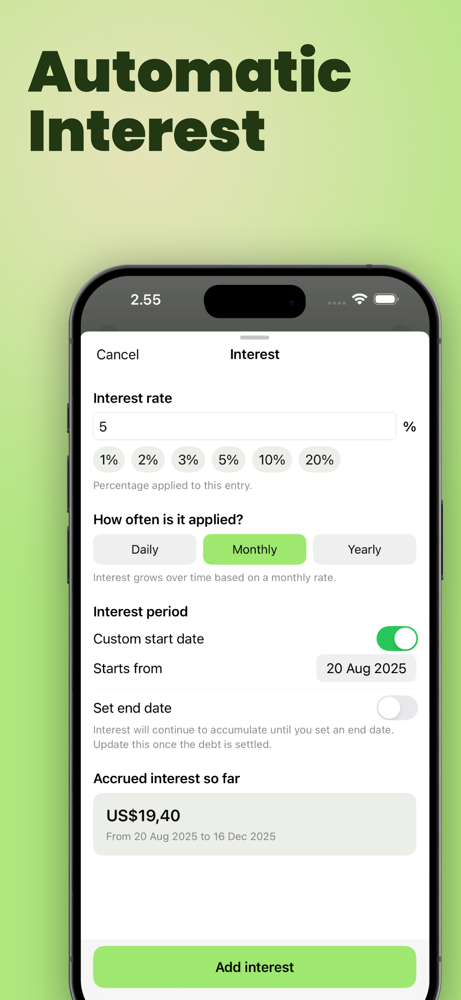

Loan tracker: You Owe Me
Shared Expenses & Follow-Ups
Stop losing money over forgotten loans — and stop stressing about what to say when money is involved.
YouOweMe is built for real life: ongoing balances, partial repayments, shared expenses, and the awkward conversations that come with them. Track who owes whom, keep everything clear, and use Money Conversations to generate ready-to-send texts for real situations: follow-up, ask for loan, and repayment update — in a tone that fits your relationship. When you need something formal, generate professional PDF statements from your records.
Used by people managing shared spending across friends, families, partners, and small businesses.
Why it works
See why You Owe Me works in real life
Money between people gets awkward quickly. This short shows how You Owe Me helps keep balances clear, follow-ups polite, and shared expenses from turning into tension.
- Track who owes whom clearly
- Handle follow-ups without awkward wording
- Keep shared money organized in one place
For friends, couples, families, roommates, and client payments.

Helping people track loans since 2016. Real stories from families, couples, and everyday shared-money use.
Perfect app for handling IOUs! It's intuitive, efficient, and easy to use without missing important features. It has been incredibly helpful for managing money exchanged between me and my elderly parents. I handle their subscriptions, some utility accounts, and online purchases, then track everything I paid so we can reconcile what they owe every few weeks. It's excellent for anyone who makes many entries, and the recurring charge feature is especially useful for monthly bills. I also use it for everyday IOUs between my boyfriend and me: I usually cover groceries and prescriptions, while he often pays for things like flights and hotels. This app has made life easier for all of us because we can reconcile periodically and still keep every money exchange accurate. I highly recommend it.
This app is a lifesaver! I finally have an easy way to track money I’ve loaned or am owed. Setup is quick, the design is clean, and reminders keep me on top of everything without stress. No more awkward ‘you still owe me’ talks—just open the app and it’s all there. Simple, reliable, incredibly useful. Highly recommend!
I love this app! Easy to use and very efficient. This app has made my life so much easier. Between keeping track of the accounts and bills I manage for my elderly parents, (which I pay and they pay me back), and same for my boyfriend and me, (which I pay and he pays me back), I have a lot of loans and repayments happening. This app makes it so I can make sure everything is easily accounted for. It also has a feature for recurring charges/payments, which has been a big help as well. I wish they had a way to schedule recurring things on a longer time interval than just one month (such as every 3 months or annually), but other than that, it's a very easy to use, not overly complicated, efficient app if you are busy and need to track these kinds of things. I highly recommend it!
Truly a favorite app! I use this app more consistently than 99% of all others on my phone. It is invaluable at keeping me on track with purchases made on behalf of multiple family members - it is so easy to use and allows all of us to see where we are at any point in time. The developer is so responsive to new ideas and incorporates improvements all the time. Top notch!
I use You Owe Me to keep track of loans I give to my kids, and it's been great. The app is very easy to use, even for someone like me who isn't very tech-savvy. I had a few questions when I first started, and the developer was incredibly responsive and helpful. It's taken all the stress out of tracking money between family. I would definitely recommend this app.
This is my go-to app for a year now for daily financial logs. It has been much easier and more convenient than anything I used before. The UI is simple and clean despite all the features. I paid once and keep getting new improvements. Most importantly, the developer provides real support and responds to suggestions and questions.
No app is flawless, but there really is not anything better out there. The developer listens to feedback and fixes issues fast. This is not an abandoned project. You won’t find anything better than this.
Superb app. I purchased the Unlimited Entries and Members subscription, and it has everything a lender needs to keep clear records. Great interface and accessibility. Looking forward to new features!
I usually judge apps by ratings and review counts, so I didn’t expect much—but I was wrong. From the first use, the layout stood out and performance was smooth. I reported a small bug through support; the developer replied quickly and fixed it in the next update. With its thoughtful design and responsive support, I confidently recommend this app to anyone tracking money they owe or are owed.
I’ve used this app for a long time. It’s the only app where the developer truly listens and responds. The interface is very easy to use, transactions are fast, and it supports many currencies, reminders, and recurring entries. It has all the features I need.
There are a number of apps like this, but this one is the best so far. The simplest interface with solid functionality. I use it daily—everything in one clean screen.
One of the best apps to track your money—whether you’re lending or running a business. Simple, user-friendly, and it gets the job done.
Very good app 🙂 Nice design, easy to use, and straightforward. I can set a date and change it later for any loan. Everything else can be edited too. Very flexible.
I can keep track of everything—including money I take from savings that I plan to pay back. You can add a note to every transaction, and the developer added my currency in about three days after I asked! There are other apps, but this one is the most convenient and fairly priced.
This app is super innovative and makes it easy to keep track of the money people owe you. Highly recommended!
I’ve tried several apps, but this one is the best!
What you get
Money Conversations
PDF Statements
Interest Tracking
Voice to Entry
Split Expenses
Payment reminders
Recurring Entries
CSV export
Face ID lock
Money Conversations
Generate ready-to-send follow-up, ask for loan, and repayment update messages with a clear breakdown and natural tone.
Professional Statements & PDFs
Generate clean PDF statements from real records, with optional logo/image branding for a more polished look.
Reminders & Recurring Entries
Stay on top of repeating payments with reminders and real recurring entries for rent, subscriptions, utilities, and household costs.
Know who owes whom — instantly
A clean main screen that shows your total balance and each person’s running balance. It’s designed for ongoing real-world situations, not “one loan opened / one loan closed.”
- Running balance per person
- Clear timeline of repayments
- Fast search and quick entry
Know when to reach out and what to say
Silence is often what makes money situations awkward. Smart Money Check-Ins adds a proactive, relationship-aware timing layer on top of Money Conversations by watching real balances, repayment progress, reminders, promised dates, and stretches of silence.
When communication starts to matter, the app suggests the right next step, explains why now, and takes you into a ready-to-send message before tension has time to grow.
Read more about when to ask for money back or send a repayment update.
- Suggests a Follow-Up when someone owes you and silence is becoming risky
- Suggests a Repayment Update when you owe someone and expectations need clarity
- Uses real balances, progress, reminders, promised dates, and relationship rhythm
- Explains why now, not just what to send
- Avoids nagging with adaptive resurfacing instead of repetitive prompts
Money Conversations that make hard messages easier
Once timing is clear, Money Conversations helps with the wording. It turns your real balances and history into ready-to-send messages for the three situations people avoid most: Follow-Up, Ask for Loan, and Repayment Update.
Choose a tone (friendly, polite, or firm), adjust details if needed, and keep full control before sending.
Want the deeper picture? See why Money Conversations was created and how it helps handle awkward money conversations more clearly.
- Follow-Up when someone owes you and you want to check in clearly
- Ask for Loan when you need help and want to ask respectfully
- Repayment Update when you owe someone and want to keep trust intact
- Generated from real balances and history, not generic templates
- Clear amount + context, so there is no confusion
- Optional secure summary link so the other person can view it without the app

Add entries by speaking naturally
Say something like: “I lent Alex 30 euros for groceries yesterday.” The app turns it into a structured entry with the right person, amount, category, and date.
- Fast capture when you’re on the go
- Reduces friction for daily use
- Designed for real-world wording

Never miss repayments
Set reminders for money you need to collect or repay. Great for one-time IOUs, due dates, and recurring payments.
- Upcoming, overdue, completed views
- Works well for recurring bills
- Designed to reduce “I forgot” situations

Repeat shared money without re-entering it
Some money patterns are not one-offs. Rent, subscriptions, allowances, weekly coffees, monthly bills, and shared household costs tend to come back again and again. Recurring Entries turns one entry into a schedule, so you can set it once and let the app carry it forward.
Choose the rhythm that fits, from daily to yearly, keep it tied to the right weekday or calendar date, and optionally set when it should end. As each repeat comes due, the app creates a real entry from the original setup, so balances and history stay accurate with far less manual work.
- Daily, weekly, monthly, or yearly recurrence
- Flexible cadence like every 2 weeks or every 3 months
- Weekly repeats can stay tied to a specific weekday
- Optional end date, or keep it running until you turn it off
- Creates real entries, not just reminders, so balances and history stay up to date

Split bills fairly (equal or custom)
Split shared expenses in one tap — equal or custom — and keep balances accurate for groups, roommates, trips, or couples.
Need a one-time calculation first? Use the free Split Expense Calculator to see who owes whom.
- Equal and custom splits
- Designed for group scenarios
- Balances stay consistent automatically

Professional Statements & PDFs for formal situations
For cases where you need something more formal, YouOweMe generates clean, shareable PDF statements from your real records. You can also add your own logo or image for a more polished presentation.
- Great for small businesses, freelancers, and client payments
- Clear repayment summaries for long-term or interest-based balances
- Easy to share and clearly formatted to reduce misunderstandings

Track interest for long-term or larger amounts
Add an interest rate (daily / monthly / yearly), set a start date, and see accrued interest so far. Useful for long-running balances and larger amounts where interest matters.
- Daily / monthly / yearly
- Custom start date
- Clear accrued interest summary

Why this app exists
Money between people rarely stays “one loan, one repayment.” I wrote a short explanation of why it gets awkward — and what actually helps.
Read the on-site article: why simple loans don’t stay simple →
If you’re looking for…
- An app to track money friends owe you
- An IOU tracker for shared expenses and split bills
- A free split expense calculator for one-time shared bills
- A debt tracker to borrow, lend, repay, and pay back clearly
- A simple tool for small business payments
- A clean alternative to spreadsheets for balances and reminders
Common use cases
Friends & roommates
- Split bills and shared expenses (equal or custom)
- Keep a clear running balance so nobody forgets
- Track personal IOUs and repayment history
- Send polite reminders when it’s time to pay back
Couples & families
- Track shared spending and repayments over time
- Stay transparent with clean summaries
- Use reminders and recurring entries for regular payments
- Track purchases made for parents and reconcile repayments clearly
- Handle recurring household bills without re-counting everything each month
- Keep one shared source of truth so everyone knows where things stand
Small business / clients
- Track simple client payments and repayments (without spreadsheets)
- Use Interest Rate tracking for long-term or larger amounts
- Use Money Conversations for follow-ups, loan requests, and repayment updates
- Share professional PDF statements for clear communication
Key features
Smart Money Check-Ins
Smart Money Check-Ins adds a proactive timing layer on top of your balances and history. It watches real balances, repayment progress, reminders, promised dates, and stretches of silence, then suggests when it is time to reach out, explains why now, and takes you into the right next message before tension has time to grow.
Money Conversations (Follow-Up + Ask for Loan + Repayment Update)
Select a person and a tone, and YouOweMe generates a ready-to-send message for the situation you actually have: a follow-up when someone owes you, an ask for loan request when you need to borrow, or a repayment update when you owe someone. Each message includes a clear breakdown and can include a secure summary link — the other person can view it without installing the app.
Professional Statements & PDFs
Generate clean, professional PDF statements from your records when you need a more formal summary. Add your own logo or image, share statements easily, and keep everyone aligned with clear data.
Voice-to-Entry (Add loans without typing)
Just speak naturally: “I lent Alex 30 euros for groceries yesterday.” YouOweMe automatically creates the correct entry with names, amounts, categories, and dates.
Smart Payment Reminders
Set reminders for payments you need to collect or repay. Great for one-time IOUs, payback dates, and recurring bills.
Recurring Entries
Turn one entry into a daily, weekly, monthly, or yearly schedule. Recurring Entries creates real entries as they come due, so balances and history stay current without re-entering rent, subscriptions, utilities, allowances, or repeating shared costs.
Built for real-life money tracking
- Automatic running balance that always shows who owes whom
- Split expenses in one tap (equal or custom)
- Track borrow and lend history with a clear timeline
- Smart Money Check-Ins that suggest when communication matters and why now
- Instant sharing of clean summaries for transparency
- Recurring entries for rent, subscriptions, utilities, or repeating payments
- Interest rate tracking for long-term or large amounts
- Professional PDF statements for formal sharing
- Sync across devices + multiple cloud profiles under one login
- Face ID / Touch ID lock for privacy
- Built for managing money on behalf of family members
- Flexible recurring schedules, including every 2 weeks or every 3 months
- Works offline
- No mandatory sign-up to get started
FAQ
What is YouOweMe?
YouOweMe is a loan tracker and IOU app that helps you track debts, shared expenses, and repayments — so you always know who owes whom and how much.
Is it good for tracking money between friends or roommates?
Yes. It’s designed for shared expenses, splitting bills, and keeping a clear running balance between people.
Can I use this for family reimbursements and purchases I pay on behalf of others?
Yes. You can keep clear records for family-related spending, use recurring entries for regular charges, and reconcile repayments with clean balances everyone can understand.
What are Smart Money Check-Ins?
Smart Money Check-Ins is a proactive layer that watches real balances, repayment progress, reminders, promised dates, and stretches of silence to suggest when communication matters. It explains why now and takes you into the right next message before tension has time to grow.
Can it help me ask someone to pay me back politely?
Yes. Money Conversations generates a ready-to-send follow-up with a clear breakdown of what’s owed — in a tone that fits your relationship.
Can it help me ask for a loan clearly and respectfully?
Yes. You can generate an Ask for Loan message from your real context, choose a tone, and send a clear request without awkward wording.
Can it confirm a repayment or partial payment?
Yes. Use Money Conversations to send a repayment update with a clear breakdown of what changed, so there is no confusion.
Does it support recurring bills?
Yes. Use recurring entries and reminders for rent, subscriptions, utilities, allowances, and repeating payments. Recurring Entries creates real scheduled entries, so balances and history stay up to date with less manual work.
Can I generate professional PDF statements?
Yes. You can generate clean, shareable PDF statements from your records, with an option to add your own logo or image.
Support
Send a support message:
Privacy Policy: View Privacy Policy
Official LinkedIn page: YouOweMe on LinkedIn
Official YouTube channel: You Owe Me on YouTube
Official Instagram: You Owe Me on Instagram
Official TikTok: You Owe Me on TikTok
Blog & guides: Read money conversation guides